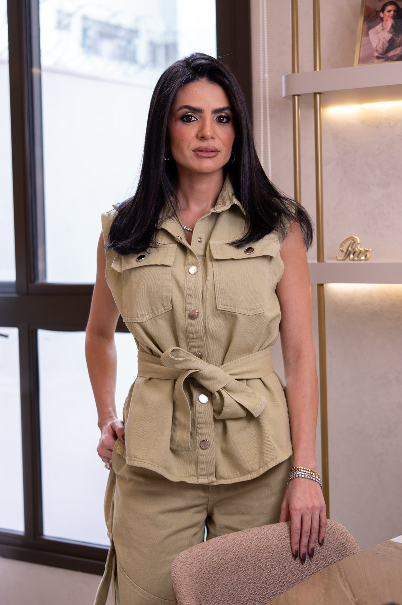

 Dra. Larissa Merola
Dra. Larissa MerolaVem aí, em novembro.
ELO
Lipedema
Uma manhã para o corpo, o cuidado e a fé.
Aula funcional adaptada ao lipedema
O que pode e o que não pode
Um momento de espiritualidade
Sábado, 14 de novembro
Condomínio Ventana · AraguariInscrições em breve
Condomínio Ventana · AraguariInscrições em breve